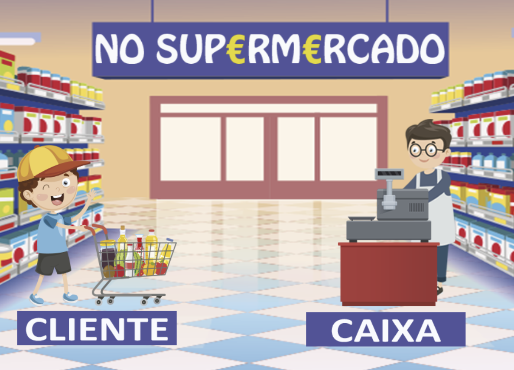
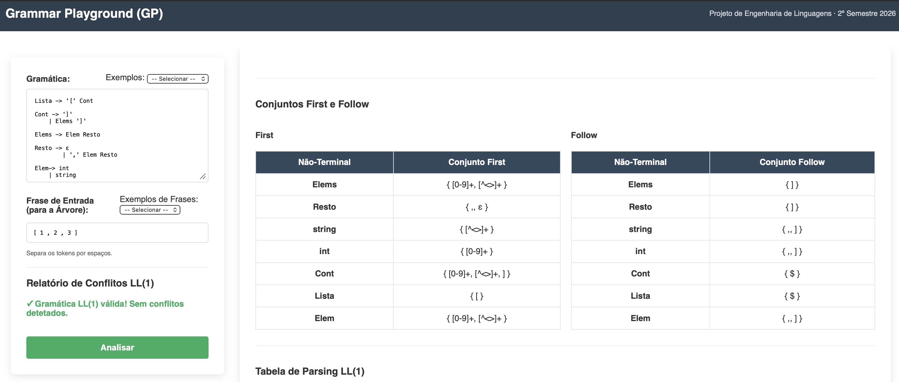
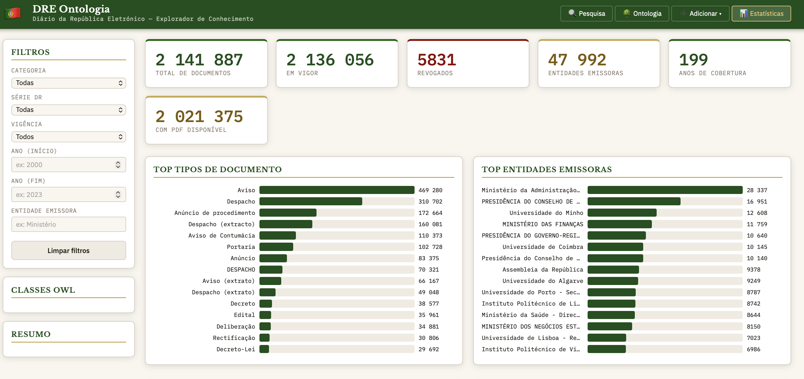
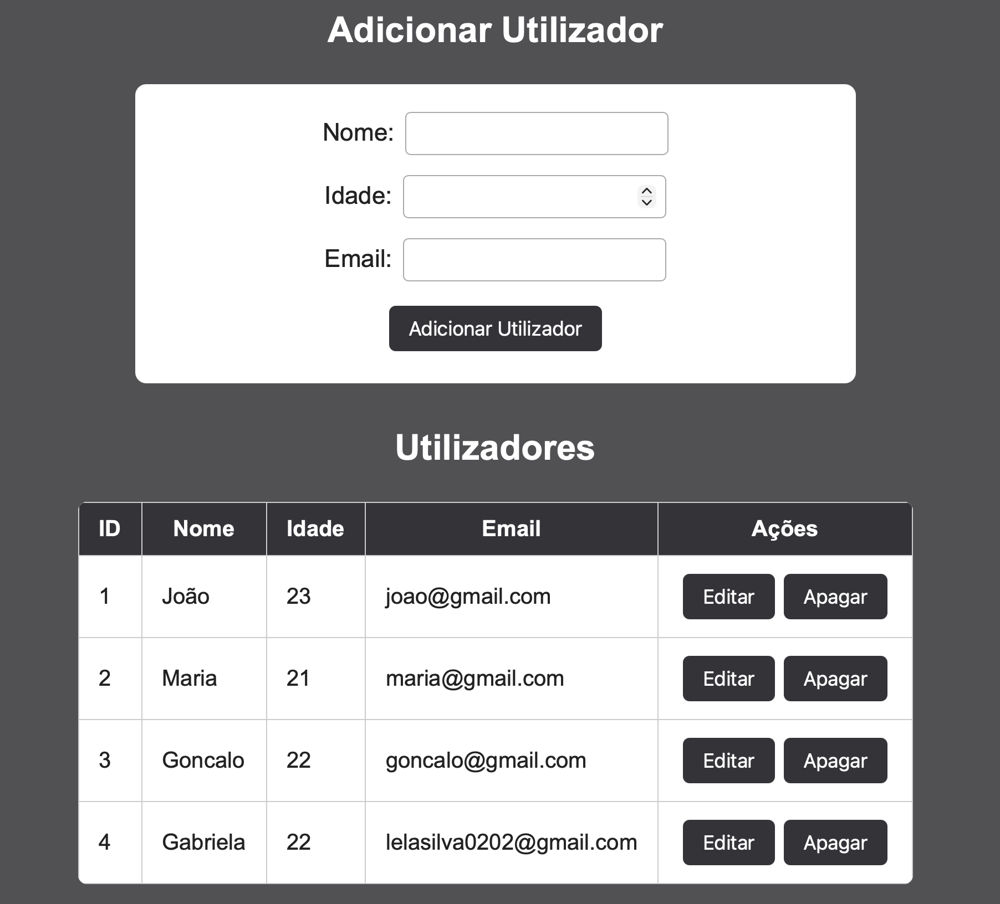

O Simulador de Compra e Venda é um jogo educativo desenvolvido em JavaScript e Phaser que permite ao utilizador assumir o papel de cliente ou vendedor. Os produtos são gerados aleatoriamente e, consoante o papel escolhido, o jogador deve efetuar o pagamento correto do produto ou calcular e entregar o troco adequado ao cliente. O objetivo é desenvolver competências de cálculo, gestão monetária e tomada de decisão de forma interativa.

Engenharia de Linguagens — 2026 Ambiente gráfico e computacional web para especificação, análise, otimização e transformação de Gramáticas Independentes de Contexto (GICs) baseadas no modelo preditivo LL(1). O sistema valida restrições gramaticais, gera autómatos (parsers) e árvores de derivação sintática abstrata (AST), e estende a semântica gramatical para a Web Semântica através da exportação de grafos de conhecimento e execução de queries ontológicas estruturadas.

Ontologia do Diário da República é uma aplicação web desenvolvida em Python (Flask) que permite explorar, pesquisar e enriquecer informação do Diário da República Eletrónico através de uma ontologia OWL. A plataforma integra uma API REST, uma base de dados SQLite e uma interface web interativa, possibilitando a pesquisa avançada de documentos, a gestão de entidades e relações, bem como o enriquecimento semântico dos dados.

Aplicação web desenvolvida com HTML, CSS e JavaScript para a gestão de utilizadores. O sistema permite adicionar, visualizar, editar e apagar utilizadores através de uma API REST desenvolvida em Python com Flask. A aplicação inclui ainda validação dos dados introduzidos e comunicação entre o frontend e o backend através de pedidos HTTP.